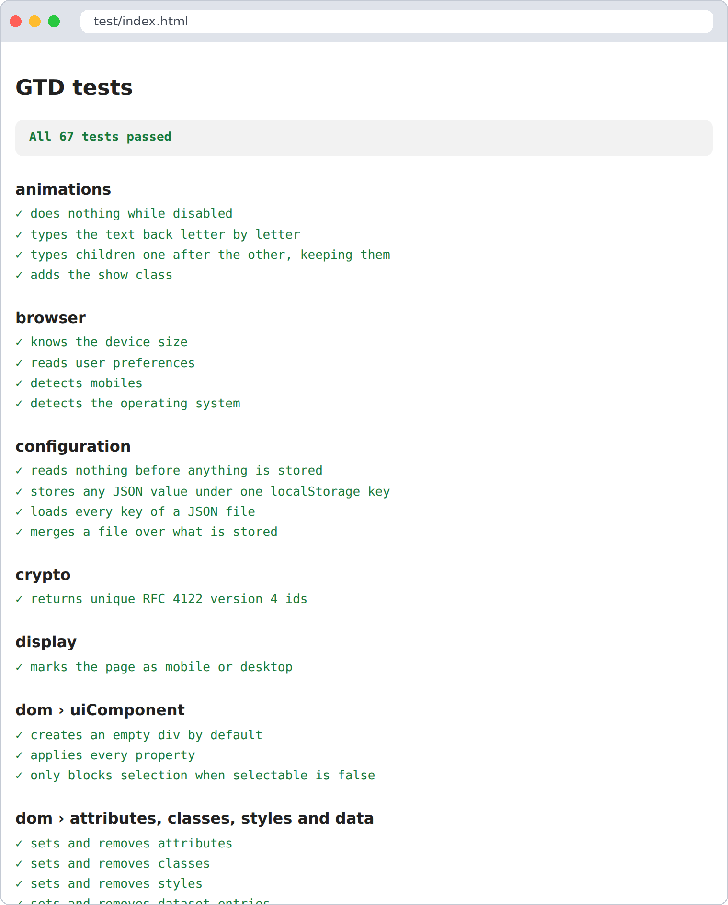

src/ the library, one module per file
test/ unit tests, one file per module (dom.test.ts tests dom.ts)
test/lib/ the small test runner
bin/ esbuild, and scripts to test and check types
docs/ this documentation, published to GitHub Pages
Like the apps made with it, GTD itself needs no Node.js or npm. Everything runs with the files in
bin/, a shell and a browser.
| Command | What it does |
|---|---|
bin/test.sh |
Builds the tests with esbuild and runs them in headless Chrome or Chromium |
bin/test.sh --build |
Only builds them; open test/index.html in any browser to see the results |
bin/install-ts.sh |
Downloads the native TypeScript compiler (bin/tsgo) with curl, once |
bin/tsgo -p . |
Checks the types of src/ and test/ |
If your Chrome is not found, point to it: CHROME=/path/to/chrome bin/test.sh.
test/index.html is also a visual report: green for passing tests, red for failing ones, with the
reason.

GitHub runs the type check and the tests on every push and pull request
(.github/workflows/test.yaml).
import { describe, expect, it, mock } from "./lib/test.js"
import { setDomEvents } from "../src/dom.js"
describe("dom", () => {
it("adds listeners", () => {
const button = document.createElement("button")
const click = mock(() => {})
setDomEvents(button, { click })
button.click()
expect(click).toHaveBeenCalledTimes(1)
})
})
Then import the new file in test/index.ts.
| Helper | Use it to |
|---|---|
expect(x).toBe / toEqual / toContain / toMatch / toBeTruthy / toBeFalsy |
Check values |
mock(fn?) |
Make a function that remembers its calls; check with toHaveBeenCalledTimes / toHaveBeenCalledWith |
fakeFetch({ path: body }) |
Answer fetch from memory during the test (404 for other paths) |
replace(object, key, value) |
Swap a property, like window.matchMedia, during the test |
quiet("error" \| "warn") |
Silence and count console messages during the test |
afterThis(fn) |
Clean up after the test, even when it fails |
Some habits that keep the suite reliable:
fakeFetch.router.ts and i18n.ts keep state for the whole page. Their tests run in
order and build on each other; add new ones at the end.document.body with afterThis.undefined == value, false == buffer.has(id)..js (./dom.js), as TypeScript and esbuild expect.docs/5-guides/ or docs/6-reference/, linked from
docs/1-overview.md.GTD is simple, and its docs should feel the same. Someone who has never used it should have something on screen in minutes. When you write a page:
.js, await where needed.docs/1-overview.md to the page, and back with [← All the documentation].3-talking-to-a-server.md);
papiro shows Talking to a server and hides the number.The docs/ folder is published with papiro by
.github/workflows/publish-docs.yaml on every push to main. Link pages with relative .md links:
they work on GitHub and papiro turns them into site links.
GitHub Pages must serve the gh-pages branch: Settings → Pages → Deploy from a branch →
gh-pages / root.